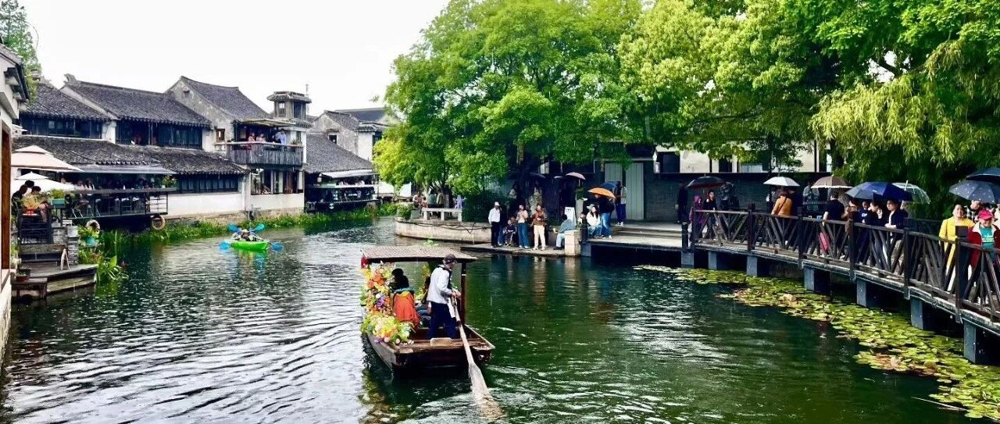
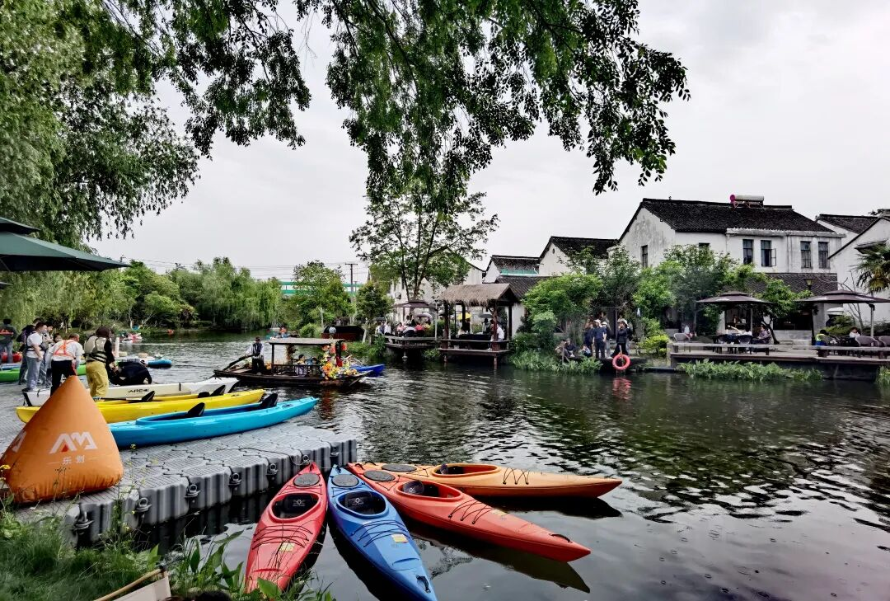
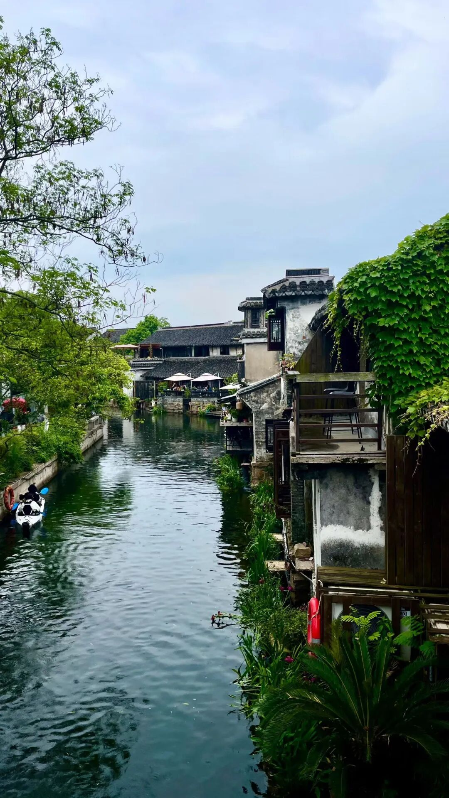
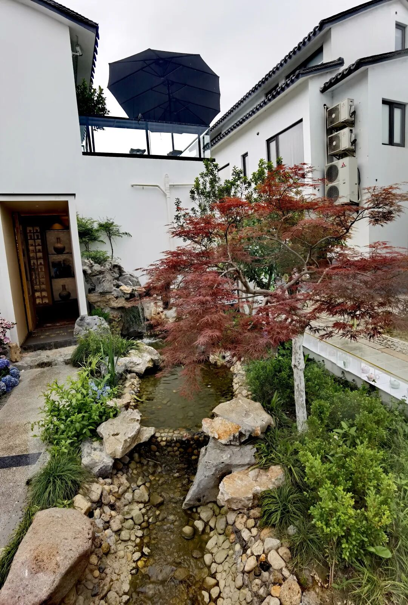
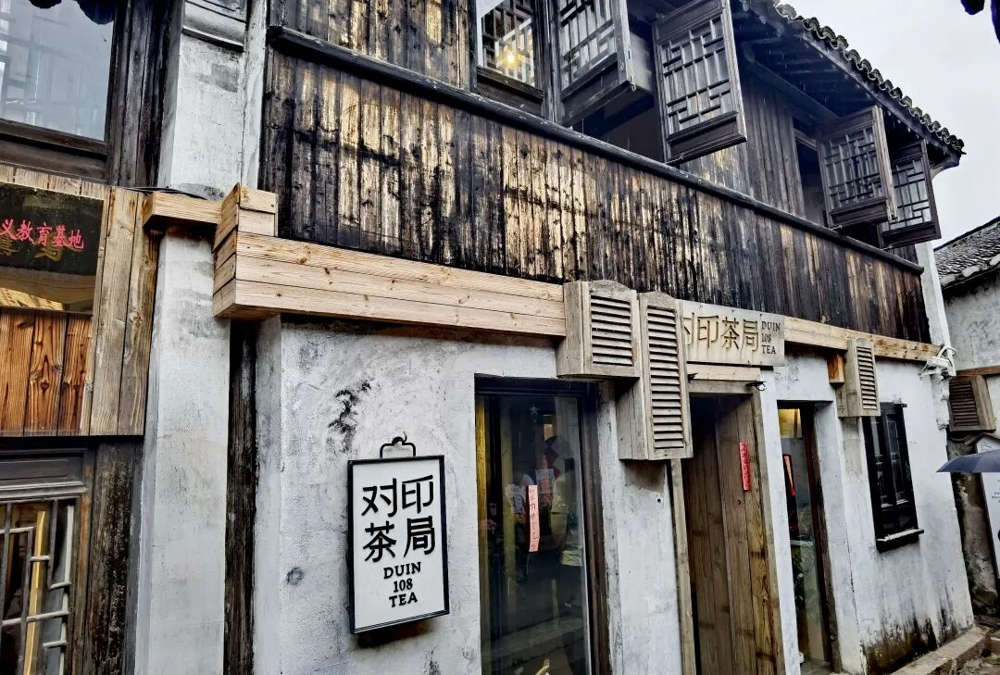
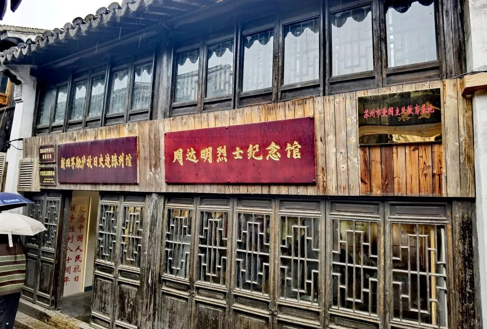
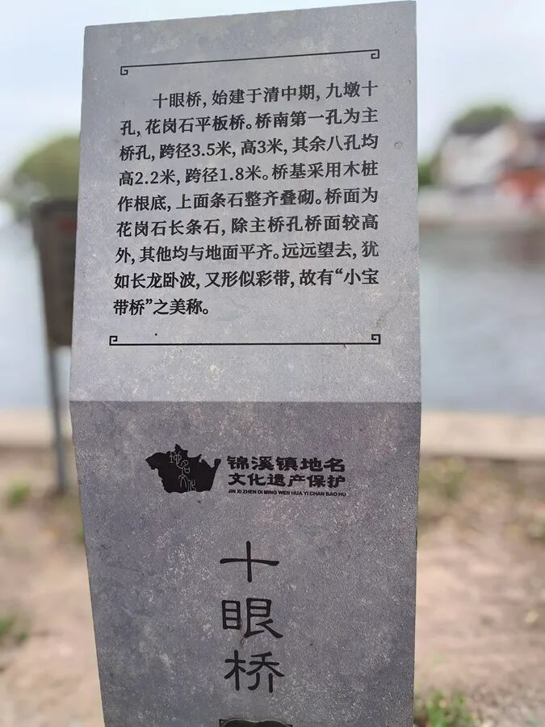
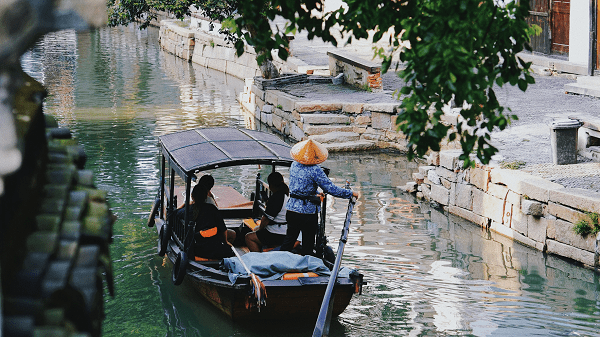
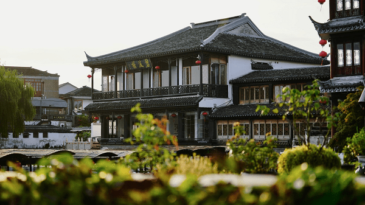
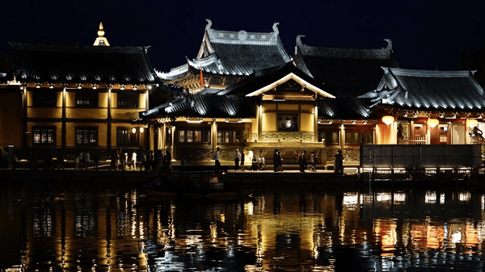

当天先游歇马桥，再驱车约 23 公里 / 33 分钟前往锦溪。歇马桥在昆山市千灯镇石浦南郊、苏沪交界处，是昆山唯一的国家级传统村落——一条 500 米古石板街串起南宋抗金名将韩世忠的传说、红色抗战史和百年老屋里的新业态，被称为"古村 + 红学"。免费开放。
一、古村概况（官方口径）OVERVIEW
| 项目 | 内容 |
|---|---|
| 地理 | 千灯镇石浦南郊，东邻上海青浦，处苏沪昆三地交界；一条"龙形水系"贯穿南北，村落沿河呈带状分布，"水街相依、窄巷深弄" |
| 规模 | 村域 3.62 km²；保留 500 米古石板街、约 5000 m² 明清建筑、传统建筑 46 处 |
| 荣誉 | 2014 年第三批中国传统村落（昆山首家国字号传统村落）、国家森林乡村、中国美丽宜居村庄、2020 江苏省特色田园乡村、2025 第七届全国文明村 |
| 定位 | 新四军淞沪抗日（千灯）县委中心地；昆山非遗"石浦白切羊肉"发祥地 |
二、历史沿革（名称由来）HISTORY
村以桥名。据《淞南志》《昆山县志》，歇马桥集镇始建于南宋嘉定年间（1208—1224），至今近千年；原为桥名、镇名，解放后成村名。得名有三说：
② 方志另说：《淞南志》载驾桥时"驱石计工立马而成，故曰歇马"。
③ 讲解提醒：三种说法并存，带团讲 ① 即可（有故事、有画面），但宜说"相传"，不要讲成定论。
由盛而衰、由衰而兴：清中期漕运便利、商贾云集，是沪苏昆三地交界商贸重镇，最盛时老街有商户 80 余家（茶馆、布庄、药店、铁行等）；近代因交通改道渐趋冷落、90 年代建制变村。2014 年入选中国传统村落，此后修复古街、引入一尺花园等 17 个文旅项目，近 40 家品牌店"藏"进老屋，形成"一街三桥五组团"格局。
三、歇马桥 · 文物保护单位级别HERITAGE STATUS
以昆山市人民政府官方不可移动文物名录（《关于推进考古前置工作的实施意见》附件，2023）为准。
| 级别 | 对象 | 讲解要点 |
|---|---|---|
| 昆山市文物保护单位 | 歇马桥石板街（2013 年列保） | 全长约 500 米、两侧约 5000 m² 明清建筑，是歇马桥唯一市级文保，也是古村"脊柱" |
| 不可移动文物（已登记 / 未定级） | 歇马双桥（南、北歇马桥）、众善桥、毕宅（毕厅）、节孝坊 | "歇马双桥""毕宅"已登记为不可移动文物；众善桥清康熙建、乾隆重修；节孝坊清嘉庆建、2023 保护性修复 |
| 荣誉称号（非文保单位） | 中国传统村落（2014 第三批）、江苏省特色田园乡村（2020）、全国文明村（2025） | "中国传统村落"是住建系统名录，不等于文物保护单位，别混讲 |
四、核心景点HIGHLIGHTS
① 古石板街 —— 村子的主轴
全长约 500 米、宽 2—2.15 米的古石板路，两侧是青砖小瓦马头墙、回廊挂落花格窗的明清老屋。2013 年列为昆山市文保单位。窄巷深弄、木门白墙斑驳，是最出片的一条街。
② 三座古桥 —— "歇马桥"村名的来历
歇马桥（传韩世忠歇马处）、定胜桥（原名北石桥，寓韩世忠凯旋得胜）、众善桥（清康熙年间建，原名葛家巷桥）。"歇马双桥"与"毕宅"已登记为不可移动文物。
③ 红色双馆 —— "古村 + 红学"的核心
韩世忠纪念馆（抗金名将、古代军事文化）+ 新四军淞沪抗日史迹陈列馆暨周达明烈士纪念馆（2015 年由旧居改建，苏州市爱国主义教育基地）。两馆免费开放，是党员干部、青年学子主题党日与研学课堂的重要点位。
④ 毕厅 · 节孝坊 · 百年古树
百年毕厅（毕宅）、明清节孝坊，另有近 300 年黄杨、百年桂花、古井——都是沿石板街步行可达的历史遗存。
⑤ 老屋里的新业态 —— 出片又出圈
一尺花园、半山诗雨、园林书局·茶咖、对印茶局、老茶馆、奈也木工坊等，把咖啡、茶、古琴、汉服、陶艺、剪纸、植物拓染装进老屋。非遗体验丰富：太湖窑陶瓷、昆曲赏析、中国剪纸、植物拓染；特色美食石浦白切羊肉、定胜糕、跳板茶。
五、研学行程（腾讯地图实景 + 顺序编号）ITINERARY
下图为腾讯地图真实截图，叠加 ①—⑥ 为建议游览顺序。歇马桥核心区很小（石板街仅 500 米），全程步行约 1 小时即可走完，从北侧村口进、沿街向南、以韩世忠纪念馆收尾，单向不折返。
六、拍照机位与成像效果PHOTO SPOTS
图片直接嵌入，所见即所得。歇马桥素材来自网络游记实拍（微信公众号"烟雨游"等），版权归原作者所有，仅供研学参考。
机位 1 · 水巷摇橹船 + 木栈桥（封面机位）
村中水巷：河道、手摇船、岸边木栈桥与白墙老屋一镜收进。船过桥洞时连拍，绿荫与睡莲作前景最出片。

机位 2 · 皮划艇水上运动（动感新玩法）
村南水面上有皮划艇俱乐部，彩色艇 + 老屋倒影 + 垂柳，适合拍活泼的团建/亲子照，与古镇静谧感形成反差。

机位 3 · 临水民居 + 藤蔓墙（文艺出片）
沿石板街走，临河一侧的木楼爬满藤蔓，倒影入水，有小船划过时按快门。适合人像与"江南慢生活"氛围照。

机位 4 · 网红店庭院（枯山水 + 红枫）
改造后的老屋庭院，白墙、卵石水景、红枫与遮阳伞构成小而精的日式庭院感，适合拍人像与静物。

机位 5 · 对印茶局（老街门面）
老街上的木构门面与白墙招牌，是"老屋里的新业态"代表构图，适合拍街景与打卡照。

机位 6 · 红色研学（周达明纪念馆）
木构老宅门面上悬挂"新四军淞沪抗日史迹陈列馆""周达明烈士纪念馆"牌匾，是"古村 + 红学"研学的标志画面。

七、美食打卡（网红店 + 面馆）FOOD
歇马桥是昆山非遗"石浦白切羊肉"发祥地，古村里还藏着多家网红新业态。午餐若在歇马桥解决，重点盯羊肉、苏帮菜与一家开在民国老建筑里的创意面馆。评分/人均取自腾讯地图、大众点评公开页面，会变动、以 App 实时为准。
| 店名 / 类型 | 招牌特色 | 参考人均 | 评分 / 口碑 | 所在位置 |
|---|---|---|---|---|
| 歇马面庐（创意面馆·新发现） | 由民国老建筑改造的创意面馆，主打奥灶面等苏式汤面；村口附近、老屋出片 | 约 57 元 | 腾讯地图 4.3；营业 10:00–20:00，电话 13776303047 | 歇马桥村 20 组 10 号 -1（村口附近） |
| 百盛人家（黑珍珠餐厅） | 昆山首家黑珍珠鼎膳·匠宴分店，不设菜牌、应季而做；镇店网红"歇马桥五虾面"（虾仁/虾脑/虾油/虾籽/虾汤配苏式面） | 偏高（未公开） | 黑珍珠品牌店 · 昆山市政府官网力荐 | 歇马桥村内 |
| 老饭店农家菜（本地老店） | 招牌红烧河鳗（网友称"专业级"）、白切羊肉、红烧土鸡、盐水虾 | 约 128 元 | 大众点评口味/服务"很好～非常好" | 歇马桥市场西首（村内） |
| 旭马楼（新派苏帮菜） | 石浦醉仙楼分号，松鼠鳜鱼、响油鳝糊、石浦羊肉、春日腌笃鲜；宋式包厢以词牌命名 | 未公开 | 昆山市政府官网推荐新店 | 歇马桥村内 |
| 南街小馆（本帮家常） | 经典本帮菜、江南村宴，适合家庭小聚 | 未公开 | 政府官网推荐新店 | 歇马桥村内 |
| 一尺花园 / 园林书局 / 对印茶局（咖啡茶饮·打卡） | 一尺花园招牌"歇马桥大战斧"、园林书局书咖、河畔咖啡；马儿榴榴榴莲甜品 | 未公开 | 网红打卡 · 政府官网推荐 | 散落古村老屋，拍照出片 |
考据提醒：原列入的"陆氏羊肉馆（兴浦街718号）"经核实腾讯/高德地图均查无此店，且兴浦街在石浦镇区、距歇马桥约 3.7 公里，不在村里，已撤出村内推荐，请勿按此找店。
八、与锦溪的行程衔接TRANSFER
前往锦溪：12:00 出发，驾车约 33 分钟 / 23 公里，约 12:30 抵达锦溪停车场，随即按锦溪研学行程步行出发。两地都在昆山、同属一条官方推荐的乡村游线路，串联顺路不绕道。
研学主题衔接：歇马桥＝抗金名将 + 红色抗战 + 传统村落保护利用（家国情怀、乡村振兴）；锦溪＝南宋皇妃传说 + 崇文重教 + 民间博物馆（文脉传承）。一站"武"一站"文"，一天里形成完整对照。
九、信源说明（歇马桥）SOURCES
官方信源：
· 昆山市人民政府《关于推进考古前置工作的实施意见》（2023）附件《全市不可移动文物名录》——歇马桥文保级别（市保 / 未定级）权威依据
· 昆山市人民政府《千灯镇歇马桥村入选江苏省乡村建设用地保障第一批典型案例》——荣誉、面积人口、"一街三桥五组团"、韩世忠得名
· 昆山市人民政府《昆山千灯歇马桥：获评全国文明村》——红色双馆、非遗、荣誉
· 苏州市人民政府《昆山市千灯镇歇马桥村》——文保单位、景点、非遗（市农业农村局）
· 昆山市融媒体中心"第一昆山"《探访昆山传统村落·歇马桥村》——始建年代、得名三说、清代商贸史
· 《淞南志》《昆山县志》、百度百科"歇马桥"词条——三座古桥、石板街形制
美食信源：
· 大众点评公开页面——老饭店农家菜（歇马桥市场西，人均 128 元）
· 腾讯地图 POI——歇马面庐（歇马桥店）：歇马桥村 20 组 10 号 -1，评分 4.3、人均 57 元、营业 10:00–20:00（民国老建筑改造的创意面馆）
· 昆山市人民政府《来歇马桥，邂逅慢生活》《新年赴千灯，邂逅古镇新趣》——百盛人家（黑珍珠鼎膳·匠宴）、五虾面、一尺花园大战斧、旭马楼、南街小馆等网红店
· 纠错记录："陆氏羊肉馆（兴浦街 718 号）"经腾讯 / 高德地图核实查无此店，且兴浦街在石浦镇区、距歇马桥约 3.7 公里，已从村内推荐撤除
图片 / 动线图说明：歇马桥配图来自网络游记实拍（微信公众号"烟雨游"等），版权归原作者所有；动线图为腾讯地图真实截图叠加顺序编号，点位按真实经纬度投影。仅供个人研学参考，如需商用或传播请自行取得授权。
一、古镇概况OVERVIEW
锦溪古镇，位于江苏省苏州市昆山市西南，地处江苏、浙江、上海三省市交界处，距周庄仅 8 公里、上海约 1 小时车程。它没有周庄、乌镇的喧嚣，是"活着的江南"——原住民还在河边洗衣、阿婆摇着蒲扇，商业味恰到好处。
| 级别 | 国家 AAAA 级旅游景区、中国历史文化名镇（2008 年）、中国民间文化艺术之乡 |
|---|---|
| 历史 | 五千余年文明史、两千余年发展史（良渚文化时期已有人类活动） |
| 别称 | 曾用名"陈墓"沿用 800 余年；"中国民间博物馆之乡" |
| 规模 | 政区面积 92.43 km²；内河道长约 6 公里，"丰"字形河网 |
| 古桥 | 36 座（民谣"三十六座桥，七十二只窑"） |
| 古建 | 明、清及民国建筑 8.7 万 m²，古巷古弄砖门楼 30 余处 |
| 名人评价 | 沈从文"睡梦中的少女"；刘海粟"江南之最"；冯英子"淡妆浓抹总相宜" |
一句话记住锦溪：一溪穿镇、夹岸桃李、满溪跃金——因水得名，又因一段南宋帝妃爱情而更名八百年。
二、历史沿革HISTORY
锦溪的名字本身，就是一部帝王爱情的注脚。
① 名称由来
志载：一溪穿镇而过，夹岸桃李纷披，晨霞夕辉尽洒江面，满溪跃金、灿若锦带，故曰"锦溪"。北宋时正式定名。
② 千年沿革时间线
| 时期 | 沿革 |
|---|---|
| 5000 多年前 | 良渚文化时期已有人类繁衍生息 |
| 春秋 | 聚为集镇，地属会稽郡 |
| 三国—唐 | 地属吴郡 |
| 五代 | 属苏州 |
| 北宋 | 定名"锦溪" |
| 南宋绍兴元年（1131） | 御名"陈墓"后，以南北市河为界分县而治 |
| 1952 年 9 月 | 昆、吴两县陈墓镇合并，升为昆山县直属镇 |
| 1992 年 10 月 | 恢复旧名"锦溪镇"（"陈墓"一名沿用约 860 年） |
南宋靖康之变后，宋孝宗南渡途经锦溪，随行的陈妃病逝，被水葬于五保湖。孝宗悲恸，降旨将锦溪更名"陈墓"，并在水冢对岸建莲池禅院，命僧超度守墓。"陈墓"一名沿用 800 余年，直到 1992 年才恢复"锦溪"之名。这条"陈妃水冢 + 陈墓改名 + 莲池禅院"的故事线，正是锦溪区别于周庄、乌镇的灵魂所在。
很多人纳闷：靖康之变后南逃的不是宋高宗赵构吗，怎么陈妃故事里是宋孝宗？答案是——孝宗是高宗抱养的养子，两人没有血缘关系，跟宋徽宗更无直接血缘。
· 宋孝宗赵昚（shèn），原名赵伯琮（1127—1194），南宋第二位皇帝（1162—1189 在位），开创"乾淳之治"，为岳飞平反、削秦桧官号，是南宋最有作为的皇帝之一。
· 血脉：他是宋太祖赵匡胤七世孙、秦王赵德芳六世孙，生父为秀安僖王赵子偁。北宋皇位自"烛影斧声"后一直在太宗赵光义一脉，到高宗绝嗣，皇位转回太祖一脉——所以对徽宗、高宗这一支来说，孝宗其实是"外姓宗亲"。
· 为何被选中：高宗赵构（徽宗之子）唯一的儿子赵旉 3 岁夭折，他逃难时又受惊丧失生育能力，只好从宗室中选继承人，挑中 6 岁的赵伯琮入宫抚养。传说高宗还用"赐 10 名宫女考验定力"的办法，在两名养子中最终选定了他。
· 为何故事用孝宗年号：陈妃水冢、莲池禅院的确切记载在隆兴元年（1163），正是孝宗刚即位之时——故事线记的是孝宗一朝的事，而非高宗南渡当年。讲解时不要说成"高宗南渡时陈妃随行病殁"，这是常见口误。
① 寺、桥、冢三者分属不同年代与主体，切勿混为一谈——莲池禅院是孝宗为陈妃所建（南宋）；古莲桥为现代新建景观廊桥（中国日报报道称"始建于建炎三年1129、重建于乾隆十二年1747"，与多处实地资料"新置景观桥"说法不一，两说并存）；陈妃水冢为陈妃墓葬。三者共同构成"古莲景区"。
③ 崇文重教与人才（有文昌阁，更有实打实的功名）
镇南有文昌阁（文星阁）供奉文曲星，正是锦溪"崇文重教、耕读传家"的象征。这份学风不是空话——科举时代锦溪实打实出过功名：
| 功名 | 人数 | 代表 / 说明 |
|---|---|---|
| 进士 | 5 名 | 陈景琇、盛符升等 |
| 举人 | 11 名 | 据《（乾隆）陈墓镇志》不完全记载 |
| 贡生 | 5 名 | 同上 |
| 状元 | 科举时代无 | 南宋卫泾是"昆山第一位状元"，但为昆山籍，非锦溪本土，讲解时勿混 |
朱雷章（1905—1995），字震初，生于陈墓镇（今锦溪）普庆桥西堍书香世家，父朱文焯是留日同盟会员、法学家。1931 年 7 月南京国民政府举办首届高等考试（官方称"国家第一次抡才大典"，戴季陶主考），1167 人报考仅录 43 人，他以总平均 82.3 分、中国近代政治史满分拿下第一名，时称"民国状元"。28 岁破格任国民政府监察院监察委员，后任中国考政学会理事长。锦溪杰出人物馆将其列在显要位置。讲解口径："科举时代无状元，但民国首届高等考试出了一个'状元'朱雷章"——这句话最抓人。
延伸数据：清末新学之后，锦溪又走出 2 位院士（陈华癸、秦国刚）、2 位共和国将军、200—300 多位教授、120 多位留学生，故有"教授之乡""留学生之乡"之称。锦溪杰出人物馆门联为张元济所题——"数百年旧家无非积德，第一件好事还是读书"，正是这条文脉最好的注脚。
④ 历代名人（攻略里最容易漏掉的一块）
| 类别 | 人物 |
|---|---|
| 隐居 / 墓葬 | 三国张昭（墓）、东晋顾恺之、唐陆龟蒙 |
| 留下诗文 | 南宋吴文英，元马致远，明代高启、沈周、文徵明、祝枝山、唐伯虎、仇英、陈淳 |
| 近现当代 | 沈从文誉为"睡梦中的少女"；刘海粟称"江南之最"；陈逸飞 1985 年在南塘桥写生，作品《晨》登上联合国首日封 |
| 锦溪本土 | 张省（刘海粟关门弟子、国礼画家）、陆曙轮（柿园主人）、朱雷章（民国状元） |
| 当代 "教授之乡" | 天文学家朱文鑫、院士陈华癸 / 秦国刚、"普通话之父"朱文熊等 |
⑤ 讲解专题：文徵明与锦溪 —— "女婿"身份与文昌阁唱和考据
文徵明（1470—1559），"吴门四家""吴中四才子"之一。他与锦溪最硬的一件实证，是这首《陈妃水冢》诗：
"锦溪女婿"要讲准：方志江苏（澎湃新闻 2020）称"明中叶文徵明娶陈墓吴氏为妻，成为陈墓女婿"。但文徵明亲撰的岳父《吴愈墓志铭》（收入《吴都文粹续集》《国朝献征录》）明载：吴氏是"昆山吴愈第三女"，吴愈"世家苏之昆山"、官至河南参政。一手史料只证明他娶的是昆山吴氏，"陈墓人"缺乏原始依据。稳妥口径："文徵明娶昆山吴氏，方志称其与陈墓（锦溪）有姻亲渊源"——不要把"锦溪女婿"当铁证讲。
"文昌阁登高唱和"的时间矛盾——最容易讲错处：
真相：张圻《文星阁"片云"额跋》碑文明言"向有镇西通神院之偏有文星阁……乾隆八年（1743）大颓……乾隆三十八年移建"——明代文徵明他们登临的是镇西通神道院的旧文星阁，旧阁乾隆八年倒塌、三十八年才移建今址。同一"文昌阁"文脉，建筑与位置都换过：明人唱和于旧阁，今人看到的是清阁，并不矛盾。
旧阁始建年代无定论：一手碑文只说"向有"、未载创建人与年代；方志另有"唐末为纪念陆龟蒙而建""始建于宋"等说，均无一手确证。讲"旧阁明代已存在、今阁清乾隆移建"最稳妥。
三、锦溪镇 · 文物保护单位级别HERITAGE STATUS
以昆山市人民政府官方不可移动文物名录（《关于推进考古前置工作的实施意见》附件，2023）为准。文保分全国重点 → 省级 → 市级 → 未定级四级；另有一批"荣誉称号"（中国历史文化名镇等）不属于文物保护单位，讲解时务必分开。（歇马桥的文保见第 1 站内"文物保护单位级别"。）
| 级别 | 对象 | 讲解要点 |
|---|---|---|
| 江苏省级文物保护单位 | 祝甸窑址、陈墓区公所旧址 | 锦溪级别最高的两处。祝甸窑址即"七十二只窑"实证；陈墓区公所旧址为省级，见证"陈墓"地名史 |
| 昆山市文物保护单位（约 15 处） | 文星阁、十眼桥、陈妃水冢、通神道院、锦溪镇古内河水道、天水桥、里和桥、锦溪普庆桥、溥济桥、丁宅、夏太昌、陈三才故居、朝阳桥、锦溪杨宅、锦溪王宅 | 当天要讲的文星阁（1991 首批）、十眼桥、陈妃水冢都在这一级；陈妃水冢、十眼桥均 1997 年列保 |
| 未定级 / 登记文物 | 莲池禅院、朱雷章故居、柿园、葛墓遗址、中和桥、众安桥等 | 注意：莲池禅院在市政府 2023 名录中为"未定级"（旧资料曾称昆山市文保，以最新名录为准） |
| 荣誉称号（非文保单位） | 中国历史文化名镇、国家 AAAA 级景区、中国民间博物馆之乡 | 称号与文保单位体系不同 |
四、核心景点HIGHLIGHTS
① 古莲桥 —— 封面地标（廊桥）
地标必打卡锦溪的标志性建筑，系现代新建的景观廊桥（当地人也称"长龙桥""三亭桥"），独立于五保湖中央，把菱塘湾与五保湖分隔开来，西侧连通莲池禅院。桥以古典飞檐亭阁连接两侧长廊，造型如展翅凤凰，朱红廊桥倒映湖面，是古镇"封面"。
② 十眼桥（小宝带桥）—— 九墩十孔平板石桥
古桥观月佳处始建于南宋隆兴元年（1163），重建于清乾隆三十八年（1773），横架于坟塘港与五保湖口，南北走向。九墩十孔、全长 52 米、宽 2.7 米，南端第一孔为主孔（高 3 米、跨 3.5 米）便行舟，其余八孔低平（高 2.2 米）利泄洪。远望如长龙卧波、形似彩带，故称"小宝带桥"。1997 年列为昆山市文物保护单位。中秋月夜"十孔映月"，是观湖赏月绝佳处。
③ 陈妃水冢 —— 灵魂地标
历史传奇五保湖中的湖心孤冢（独圩墩），四面环水，离岸约 50 米。南宋隆兴年间，宋孝宗宠妃陈妃病殁水葬于此。奇特之处在于：无论水位如何涨落，水冢始终露出水面，至今未经考古发掘，成因仍是谜。重要提示：水冢为昆山市文物保护单位（1997 年第二批），严禁登岛、不可坐船靠近，也禁止近距离拍摄；原有栈桥已毁，出于安全与文物保护不会再复建——只能在莲池禅院一侧岸边或十眼桥上隔水远眺，用长焦取景。
④ 莲池禅院 —— "水乡佛国"
古建位于镇南五保湖畔，始建于南宋，为宋孝宗超度陈妃所敕建，又称"水乡佛国"，已有 800 多年历史。据乾隆《陈墓镇志》载："宋孝宗南巡葬陈妃于此，构是院，命僧守之。"庙门朝北，全国罕见。寺前是菱塘湾，寺后是五保湖。
⑤ 文昌阁（文星阁）—— 登高俯瞰 · 崇文重教的象征
古建昆山市文保俗名文星阁、又名片云阁，四面三层楼阁式建筑，飞檐翘角，高 15.6 米，位于古莲池畔，供奉文昌帝君。它是锦溪"崇文重教"的象征，与镇上历代 5 名进士、11 名举人、"民国状元"朱雷章组成一条完整的文脉讲解线。登阁可俯瞰古镇全貌。
始建与唱和时间线（务必讲清）：张圻《文星阁"片云"额跋》碑文载"向有镇西通神院之偏有文星阁……乾隆八年（1743）大颓……三十八年移建"——即旧阁原在镇西通神道院，明代已存在，文徵明（卒于 1559）与沈周、祝允明、唐寅登高唱和登的是那座旧阁；旧阁 1743 年倒塌，1773 年才移建到今莲池禅院址。旧阁创建人与确切始建年代史料无定论（唐末为纪念陆龟蒙而建 / 始建于宋 / 明说并存）。稳妥讲法："旧阁明代已有，今阁为清乾隆三十八年移建的文保建筑"——详见"文徵明与锦溪"专题。
⑥ 民间博物馆群 —— "中国民间博物馆之乡"
研学重点2000 年起，锦溪广泛引入民间力量开设收藏博物馆，形成十余家的博物馆群：中国古砖瓦博物馆（国内唯一砖瓦专题馆，藏瓦当、滴水、屋脊构件等 2300 余件）、古董博物馆、宜兴紫砂博物馆、金石人家（篆刻）、柿园（画家陆曙轮故居）、张省美术馆、锦溪杰出人物馆等。联票 65 元可逛 6 馆，是"历史控"研学必到之处。
⑦ 其他古桥与节点
里和桥（南塘桥，南宋，"锦溪八景"之"古井风亭"所在地）、普庆桥（清，桥联"两岸烟飞通海市，一溪浪涌接澄湖"）、天水桥（明）、烟雨长廊、节寿桥、祝甸古窑遗址等。老街上还有"陈墓邮局"旧址、中西合璧小楼等生活化场景。
五、研学行程ITINERARY
核心动线（实地走访验证）：停车场出发 → 步行约 15 分钟到古莲桥 → 陈妃水冢（陈墓荡河岸最佳观景位）→ 顺势进莲池禅院 · 文昌阁（文星阁）→ 十眼桥 → 折返进老街（上塘街 → 下塘街）→ 返回停车场。轻松走逛，逛街购物约 1 小时、15:30 准时回停车场、约 16:30 回苏州，不逛博物馆、不坐游船。下图为腾讯地图实景截图（真实电子地图），图上叠加的 ①—⑦ 编号即游览先后顺序。
④莲池禅院 ⑤文昌阁 ⑥十眼桥
⑦上塘街 → 下塘街（老街往返） （红=湖区景点，绿=老街，虚线=建议行进方向）
从停车场步行到古莲桥约 15 分钟。
在桥上拍照逗留约 10 分钟，拍"桥洞与倒影拼成满月"的明信片机位。
走过古莲桥就到陈妃水冢的拍照打卡点，就地取景、简单讲解两句即可，逗留约 10 分钟（最迟 13:00）。隔水远观湖心孤冢，讲南宋帝妃故事。注意：严禁登岛、坐船靠近或近距离拍摄，原栈桥已毁且不复建，只能用长焦在岸上取景。
陈妃水冢旁边就是莲池禅院，直接进入，连同文昌阁共逗留约 20 分钟（至 13:30）。看庙门朝北的罕见格局，登阁俯瞰古镇全景与十眼桥。讲解点：文星阁是清乾隆三十八年移建的昆山市文保，由此引出锦溪"崇文重教"——5 名进士、11 名举人、民国首届高等考试"状元"朱雷章。
从禅院步行约 5 分钟即到。九墩十孔"长龙卧波"，在桥旁拍照打卡约 10 分钟。
调转方向往古镇走，约 10 分钟进入老街上塘街（约 14:00）。
轻松逛街购物、喝茶吃点心、随手拍照，约 1 小时 10 分钟（至 15:10）。街口"陈墓邮局"旧址顺路打卡。本段不进博物馆、不坐游船。
15:10 从老街步行返回，预留约 20 分钟，15:30 准时回到停车场；随即驱车返程，约 16:30 回到苏州市区。
路线依据：本动线的方向（停车场出发—南部湖区—折返进老街）参考了多份公开攻略的共识走法（携程 Trip.com 半日精华版、什么值得买"免费区这样玩"、今日头条"36 座桥 72 个窑"环线攻略等），再结合各点位腾讯地图真实经纬度按最短不折返顺序编排；具体编号顺序为研学实测设计，非照搬某单篇攻略。
两日游加餐：住一晚临水民宿，次日清晨 6 点去菱荡湾拍薄雾白墙倒影，或去祝甸古窑遗址（省级文保，19 座清代古窑）看"七十二只窑"实证。
六、拍照机位与成像效果PHOTO SPOTS
每个机位直接配实拍图，所见即所得。图片来自央广网记者及摄影师郁永龙（笔名苏龙）实拍，版权归原作者所有，仅供学习参考。
机位 1 · 古莲桥全景（封面机位）
站五保湖入口或湖岸侧面，把"廊桥 + 湖面倒影 + 莲池"一镜收进。桥洞与倒影恰好拼成满月，晨雾一起就是标准明信片。

机位 2 · 十眼桥（小宝带桥）—— 九墩十孔长龙卧波
十眼桥始建于南宋隆兴元年（1163），重建于清乾隆三十八年（1773），九墩十孔、全长 52 米，横架于坟塘港与五保湖口，俗称"小宝带桥"。站在桥的正侧位或远处，最能拍出"长龙卧波"、十孔映水的效果。中秋月夜，月光穿十孔洒湖面，形成"十孔映月"奇景。


机位 3 · 水巷摇橹船 / 廊窗框景
登古莲桥或桥畔，用廊窗作前景框住湖景；或坐手摇船从水上回望白墙石桥。傍晚 4–5 点光线最柔，穿旗袍或汉服拍人像氛围感拉满。

机位 4 · 水巷 / 临水民居（烟火气）
别只盯主街，钻进两侧窄巷，白墙水渍青苔、晾衣养花，人少极易出空镜大片；临河码头泊船、石阶直达水面满是生活气。

机位 5 · 碧波楼 / 临水楼阁
白墙黛瓦、飞檐翘角的临水楼阁与古镇融为一体，是拍建筑层次与倒影的好点位。

机位 6 · 夜景 / 蓝调时刻（镇区倒影）
亮灯后拍临水建筑倒影；天色靛蓝的"蓝调时刻"拍古桥飞檐剪影，鱼灯、孔明灯倒映湖心如"无数个月亮坠进湖心"。

机位 7 · 古莲桥夜景（廊桥亮灯）
古莲桥轮廓灯亮起后，廊桥如一条玉带横卧水面，倒影入古莲池，是当天收尾最好的一张。

七、美食打卡（网红店 + 面馆）FOOD
锦溪午饭首选"奥灶面"——本地面馆密集、价格实在，是大众点评上锦溪餐饮的高频好评项。以下店铺与评分取自大众点评公开页面及游客实拍攻略，星级/人均会变动、以 App 实时为准，方便当天按口味自选。
★ 网红 / 高分店（大众点评）
| 店名 | 招牌特色 | 参考人均 | 评分 / 口碑 | 所在位置 |
|---|---|---|---|---|
| 韩记奥灶面（面馆） | 鳝丝面（约25元）、焖肉面（约15元）、爆鱼面；红汤地道、浇头多，本地人也常去，去晚鳝丝售罄 | 约 15 元 | ★★★★ 游客推荐（非点评官方） | 长寿路圣荡浜 12 号（停车场旁） |
| 小毛糕饼店（糕点） | 袜底酥（椒盐黑芝麻、葱油花生咸口，10 只约16元）、酒酿饼、鲜肉月饼；百年老店、现做现烤 | 约 15 元 | ★★★★★ 游客推荐（非点评官方） | 上塘街 41 号 |
| 外婆家面馆（面馆） | 爆鱼/鸭肉奥灶面、熏鱼面、万三面；古镇人气面馆，292 条点评 | 约 14 元 | 大众点评口味 7.4 / 环境 7.3 / 服务 7.4 （口味/环境/服务为单项分，满分 10 分） | 下塘街 10 号 |
| 蒋小厨农家菜（农家菜） | 爆鱼奥灶面、昂刺鱼、水芹炒香干；河边长桌、临窗看船娘 | 20–70 元 | 大众点评 4.5 星 （门店星级，满分 5 分） | 古镇河边（中心必经之路） |
| 香酥鸡小吃店（小吃） | 香酥鸡（微辣，粉薄肉嫩） | 10/15/20 元 | 游客攻略推荐 | 下塘街 56 号 |
| 阿婆菜馆 / 侬乡园（农家菜） | 清蒸白水鱼、腌萝卜、土菜；本地阿姨掌勺 | 未公开 | 河岸边多家，按点评评分自选 | 古镇河岸边 |
必吃小吃与河鲜
必吃小吃
· 袜底酥——锦溪头号特产，据传仿宋孝宗宫廷茶点，形如袜底、油酥薄如蝉翼，现烤的才香
· 奥灶面——昆山招牌，红汤爆鱼面，午餐首选
· 海棠糕 / 梅花糕——焦糖脆壳 + 豆沙流心
· 香酥鸡、臭豆腐、芡实糕、青团、水红菱
河鲜与家常菜
· 清蒸白水鱼（鲜掉眉毛）
· 酱爆螺蛳 / 盐水虾
· 腌笃鲜
· 阿婆菜炒毛豆
· 桂花糕、酱猪蹄
八、实用贴士TIPS
| 地址 | 江苏省苏州市昆山市锦溪镇邵甸港路 18 号 |
|---|---|
| 门票 | 古镇免费进入；小景点联票约 40–65 元（可逛 4–6 馆）；登古莲桥含联票；70 岁以上免票 |
| 开放时间 | 4–10 月 08:00–17:00；11 月–次年 3 月 08:00–16:30 |
| 手摇船 | 约 60 元/船（可坐 4–6 人，可拼船），船娘唱吴语小调 |
| 交通 | 昆山南站打车约 30 元；昆山汽车南站乘 130 路直达；上海自驾约 1 小时 |
| 最佳季节 | 3–5 月春柳烟雨、9–11 月秋高气爽；夏季荷花满池 |
| 住宿 | 古镇内临河民宿 150–200 元/晚（推窗见河，拍清晨首选） |
九、信源说明（锦溪）SOURCES
本攻略史实数据均以官方信源为准，重点沿革已逐条核对；两站信源已分开列示，歇马桥信源见第 1 站末尾。
官方信源：
· 昆山市人民政府《关于推进考古前置工作的实施意见》（2023）附件《全市不可移动文物名录》——锦溪文保级别（省保 / 市保 / 未定级）权威依据
· 苏州市地方志编纂委员会办公室《申遗九镇（七）锦溪》——桥、阁、博物馆群数据
· 科普中国《昆山锦溪镇：吴韵越风最江南》——沿革、建筑布局
· 苏州市地方志办公室"方志苏州"公众号《古镇古村系列——昆山市锦溪镇》——沿革时间线、名人
· 中国日报网《江苏苏州：古莲桥恢复开放引客来》——古莲桥始建 / 重建年代、恢复开放信息
· 百度百科"十眼桥"词条 + 郁永龙《苏州百桥（93）寻拍昆山锦溪"十眼桥"》——十眼桥始建 / 重建年代、九墩十孔形制
· 央广网（记者王姝姝、顾炀威）——锦溪实拍图组
美食信源：
· 大众点评公开页面——外婆家面馆（下塘街 10 号，口味 7.4 / 环境 7.3 / 服务 7.4，单项分满分 10 分）、蒋小厨农家菜（门店 4.5 星，满分 5 分）
· 十六番《锦溪古镇美食攻略自驾一日游》——韩记奥灶面、小毛糕饼店、香酥鸡小吃店（游客推荐星级，非大众点评官方星级）
辅助参考：携程社区 / 攻略、凤凰网、网易、搜狐（图虫 / 摄影部落等实拍图）、苏州新闻网、引力播、微信公众号乡村游游记。
图片 / 动线图说明：锦溪配图为央广网记者（王姝姝、顾炀威）与摄影师郁永龙（笔名苏龙）实拍；动线图为腾讯地图真实截图叠加顺序编号，点位按真实经纬度投影。版权归原作者及原发布平台所有，仅供个人研学参考，如需商用或传播请自行取得授权。史实如有错漏，以官方最新口径为准。